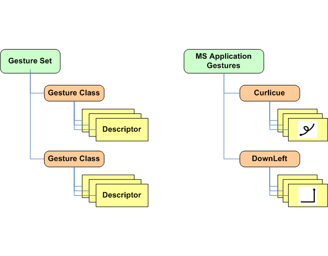

iGesture Data Structure
A simplified version of the iGesture core data structure is shown in the figure at the bottom of this page. A
Gesture Class describes a gesture in an abstract manner. A Gesture Set represents a group
of gesture classes that can be used within an application.
The gesture Descriptor provides a specific description for a gesture class. A
gesture class should have at least one descriptor. The most commonly used
gesture descriptor is the SampleDescriptor. Training-based algorithms (e.g. the Rubine algorithm)
store a set of samples within the sample descriptor class.
The left-hand side of the figure shows the abstract data structure whereas on the right-hand
side an example of a specific gesture set (MS application gestures) together with its gesture classes and
descriptions is outlined.
